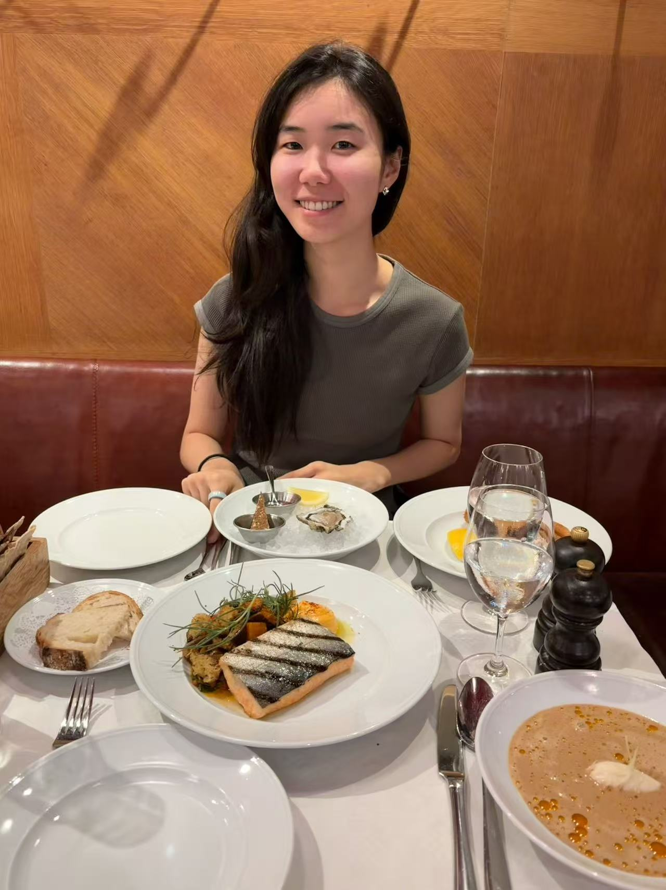

About

I am Yishan Wang, a PhD researcher in multimodal AI agents at Eindhoven University of Technology, advised by Aaqib Saeed and Mathias Funk.
Education
- Eindhoven University of Technology — PhD in Multimodal AI Agents (ongoing).
- University of Amsterdam — MSc in Brain and Cognitive Sciences.
- Peking University — BA in Philosophy (Science & Logic).